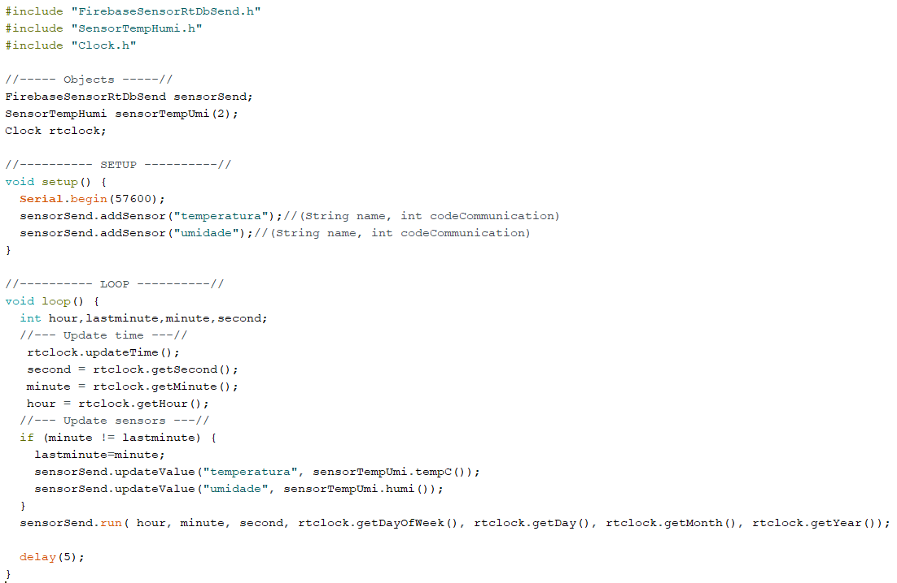
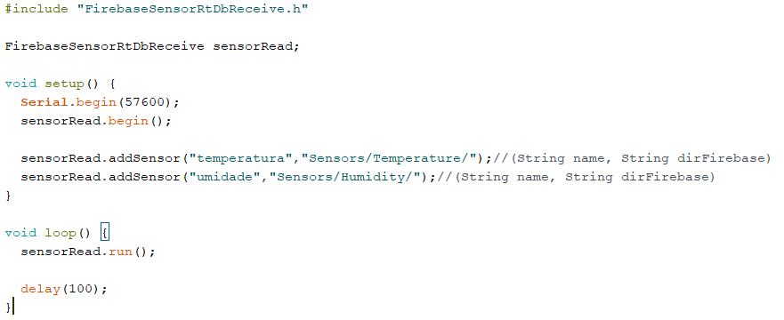

Library para enviar dados para o firebase

Finalmente a library para enviar dados de qualquer tipo de sensor para o firebase está funcionando! O envio de informações dos sensores para o firebase depende de duas libraries. A primeira é utilizada no Arduino Mega e segundo no NodeMCU. Tentamos deixar a library da forma mais fácil de utilizar mas por causa disso ela depende da utilização de um arduino e um nodeMCU para funcionar normalmente (Não é possível utilizá-la com somente uma placa).
Library send
A primeira library, que é utilizada no Arduino Mega, funciona da seguinte forma: Primeiramente é necessário utilizar ".addSensor" para cada sensor que for utilizar (é possível definir o nome do sensor adicionado para facilitar o uso). Após adicionar cada sensor na library é necessário executar um ".updateValue" para cada sensor. Nós estamos executando o update a cada minuto de forma que seja calculado a cada 30 minutos a média dos valores enviados. Finalmente, ao executar ".run" e for detectado que chegou no final do ciclo de 30 minutos os valores das médias são enviados pelo serial para o NodeMCU.
Código compilado no Arduino Mega durante os primeiros testes.
Library read
A segundo library, que é utilizada no NodeMCU, funciona da seguinte forma: Primeiramente, assim como a primeira library, é são adicionados os sensores na library juntamente como o endereço onde serão armazenados os valores no firebase. É necessário adicionar os sensores na mesma sequência que eles foram adicionados no código do Arduino Mega para evitar erros. Após isso, no loop, ao utilizar o "run" a library detecta se existe alguma informação na porta serial. Se existir, ela adiciona o valor da média no endereço indicado no banco de dados do firebase + "/Today". No final do dia é calculada a média dos valores do dia e este resultado é adicionado no banco de dados com o respectivo dia. Além disso, todos os valores em Today são copiados para Yesterday, no diretório, e em seguida os valores em Today são deletados. Finalmente, em todo domingo é calculado a média de todos os valores da semana e o resultado é adicionado em Year.
Código compilado no NodeMCU durante os primeiros testes.
Dados dos sensores no firebase.
Dados do sensor de temperatura no firabase.
Envio de informações serial
No inicio da transmissão de dados, a library do Arduino Mega envia informações de hora e data. Após isso, as média dos valores coletados durante os 30 minutos são enviados para o NodeMCU. Todos os dados são enviados em bytes, então cada float de dado é transformado em 4 bytes na library. No início de cada transmissão de dados dos sensores, são enviado dois bytes (254 e 253) para informar o NodeMCU que é o início de uma sequência de bytes. Em seguida são enviados dois bytes iguais com o código do sensor para distinguir os dados recebidos na library do NodeMCU. No final de cada transmissão de dados pelo serial é enviado um byte de confirmação com a soma dos valores de todos os outros bytes. Nós estamos enviando este byte de confirmação para certificar que nenhum dado corrompido seja enviado para o banco de dados no firebase.
Envio dos bytes a primeira library para a segunda.
Monitoramento dos dados pelo monitor serial
De forma a facilitar o monitoramento do que está acontecendo na transmissão dos dados e o andamento dos envios de informações do NodeMCU para o firebase, cada library envia para o monitor serial do arduino todas as informações necessárias. No ínicio do recebimento de dados é informado a hora do ciclo. Após isso é informado o nome do sensor que os dados estão sendo recebidos, o valor recebido e o diretório que será modificado no firebase. Para facilitar a leitura, sempre que a library for escrever um valor no endereço do firebase aparece "SET" no início e sempre que ela estiver lendo um valor do firebase aparece "GET" no início. O valor que será escrito no firebase ou foi recebido do firebase é informado no serial.
Prints no monitor serial do arduino.

Deixe um comentário ...
Seu comentário foi enviado.